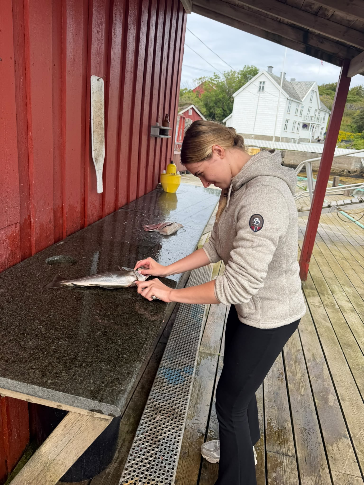

Italy is exactly what I expected.
And somehow a little better.
The weather is perfect, the food already feels unfairly good, and the whole place has that relaxed feeling where nobody seems to care what time it is.
I thought the first day would feel busy. Instead, it feels like I have already settled into it.
First conclusion: I am going to enjoy this place a lot.

So far, life is going very well.
No complaints. No dramatic problems. No urgent desire to leave Italy.
Things I already understand about Italy.
I thought I would spend most of the time doing my own thing.
That prediction lasted approximately twenty minutes.
People talk here. A lot. Someone asks where you are from, another conversation starts, and suddenly you are standing around with people you did not know earlier.
It is surprisingly easy to meet people without trying very hard.
Italy may be making me more social than usual.
So far:
Things that successfully made it to Italy.
Yes.
That one.
A very reasonable list.
This list may contain a significant omission.
I forgot something.
Something fairly important.
I have a girlfriend.
This probably should have appeared earlier.
Her name is Kami.
She lives in Kaunas.
She absolutely loves Italy.
A lot.
This makes the previous notes slightly more dangerous.

Kami is currently not in Italy.
Some phrases in this diary may require context.
Means exactly that. Meeting people.
Also technically true.
I am not commenting further.
This diary is now becoming a terrible idea.
Mainly because Kami is still reading.
Okay. Enough.
Time for the actual version.
What was actually true?
.jpeg)
Every time I see something beautiful here, I think the same thing.
Kami would love this.
The list was missing one thing.
Italy is amazing.
And I am genuinely having a great time here.
But I did not forget you.
If anything, being somewhere you love just makes me think about how much you would enjoy all of this.
Italy gets me until August 25.
You get me August 26. ❤️
Mission accomplished: make Kami jealous.
P.S. The cologne part is still true.